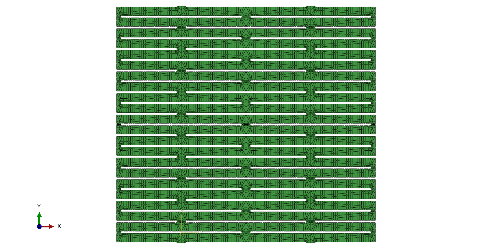
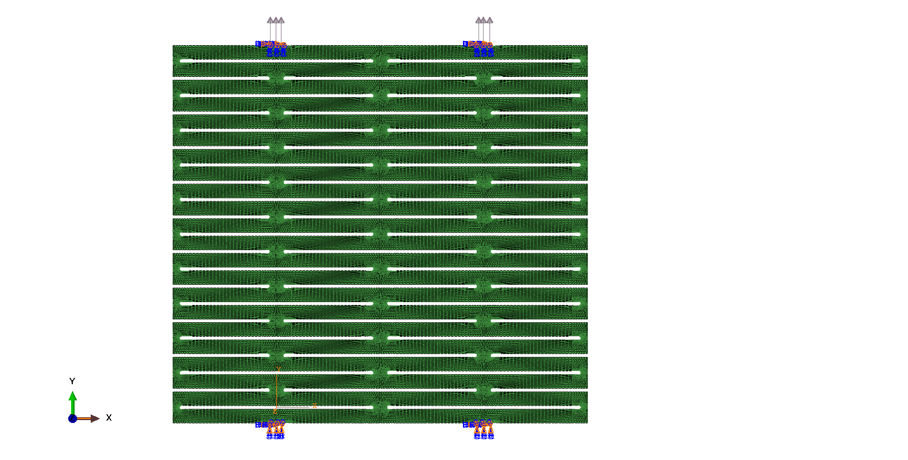

Kirigami Energy Dissipation
Programming Geometry for Controlled Instability

This research investigates kirigami cut patterns as programmable geometric imperfections for controlling deformation, instability and energy absorption. Analytical mechanics, Abaqus simulation, FEniCS implementation and experimental validation are combined into a unified research framework.
Geometry Programming


Eigenvalue Buckling

Finite Element Analysis


Computational Mechanics
The Abaqus model was independently reproduced in FEniCS using the weak form of linear elasticity. Mesh refinement, displacement convergence and stress localization were compared to verify the numerical implementation and establish a reproducible computational workflow.


Experimental Validation


Applications
Programmable energy absorption, crash attenuation, deployable systems, protective structures and adaptive thin-walled components.